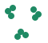

Deep Blue знае какво е добра позиция, защото хора са му го описали. Има и друг път: машината сама да открие закономерностите от примери или от опит. Това е машинното обучение.
С учител
Получаваш примери с верни отговори и се учиш да отговаряш за нови. Снимки с надпис „котка“ или „куче“.

Без учител
Нямаш верни отговори, но търсиш сходства и групи. Подреждаш снимки по прилика, без някой да ги е назовал.
С подсилване
Действаш, получаваш награди или наказания и се учиш кое води до по-добър резултат. Играеш и трупаш точки.
Това не са стъпала от „по-прост“ към „по-умен“ изкуствен интелект, а различни инструменти. Съвременните системи често съчетават правила, търсене и учене.
Машината може да се учи от примери с отговори, от сходства или от награди.